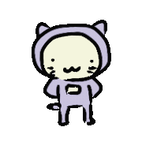
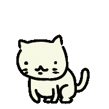
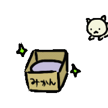

たいじろうって？
ヨシダスタジオの看板ねこ。ふつう「たいじろう」と呼ぶのは、むらさきのこの子です（「たいじろう（むらさき）」とも）。仲間のみどりとピンクもいて、みんなで「たいじろうズ」。うごくスタンプや絵文字、ブラウザゲームに登場して、いろんな表情やダンスを見せてくれます。
たいじろうのはじまり
たいじろうは、もともとふつうのネコでした。くわしくは、動く絵本スタンプ「【動く絵本】たいじろうズ 1」の第1話をみてね。



ヨシダスタジオの看板ねこ。ふつう「たいじろう」と呼ぶのは、むらさきのこの子です（「たいじろう（むらさき）」とも）。仲間のみどりとピンクもいて、みんなで「たいじろうズ」。うごくスタンプや絵文字、ブラウザゲームに登場して、いろんな表情やダンスを見せてくれます。
たいじろうは、もともとふつうのネコでした。くわしくは、動く絵本スタンプ「【動く絵本】たいじろうズ 1」の第1話をみてね。

